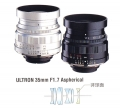

Cosina 35/1.7 Ultron Asp
刚进不久，用得不多，一般都是爬山或去驴行才带上它。亮骚的就免了，出片很好，就是机械结构不咋地，看来和莱卡比在做工上确有差距
便宜，成像好，超过这个价格的预期。
感觉不是很耐用
V35/1.7,忘了打分,重新评价. 做工精密，手感不错，加转接环在LEICA M6上操作流畅，觉得做工不比L头差多少.对焦无误。成象反差较锐，色彩稍偏冷，但不是很明显。解像力一流。自带遮光罩，使用较方便。 一人不能在同样器材评第二次?否则上次的评论的打分就没了? [HWJ 编辑于 2005-01-05 11:15]
同上
暗部表现不如LEICA M头，色彩艳丽不如CZ头，表现较中庸,但较真实地还原色彩.
没有评V35/1.2的地方,就写在这儿了. V35/1.2不愧是V的顶级头,做工极其出色,M口省了转接环,出PP偏暖,最大光圈是分辩率还不错,属于低反差高分辩率的特色,焦外柔化漂亮.无论做工到成象都比v35/1.7头明显提高.
无论做工到成象都不比M35/2差,至少分辩率不低于前一代M35/2头,反差锐度比M35/2高一点.要说不同,只是味道及特色不同.
体积太大,取景有挡角.价格太贵.
做工精密，手感不错，加转接环在LEICA M6上操作流畅，对焦无误。成象反差较锐，色彩稍偏冷，但不是很明显。解像力一流。自带遮光罩，使用较方便。
同上。
暗部表现不如LEICA M头，色彩艳丽不如CZ头，表现较中庸,但较真实地还原色彩. [HWJ 编辑于 2004-08-28 17:08]